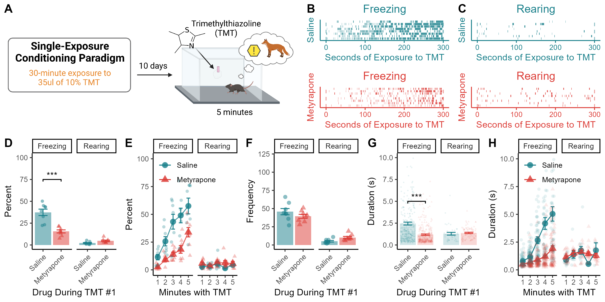

Figure 4: A Second TMT Exposure

Figure 4. (A) Mice are exposed to TMT for a second, five-minute test 10 days after the 30-min exposure depicted in Fig. 3. (B & C) Raster plots showing individual episodes of freezing and rearing during the second five-minute exposure to TMT. (D) Metyrapone during the first TMT exposure reduces freezing during the second encounter. (E) Freezing behavior increases across the five-minute session for both groups, but mice injected with saline before the first TMT exposure exhibit more freezing during every minute of the second exposure than mice treated with metyrapone during the first TMT session. (F) Mice treated with metyrapone during the first TMT session exhibit more rearing than those treated with saline. (G) The average duration of freezing episodes during the second TMT session is reduced for mice treated with metyrapone during the initial encounter with TMT. (H) The average length of freezing episodes increases across the five minutes for both groups, but mice treated with saline during the initial TMT encounter exhibit longer bouts of freezing than metyrapone-treated mice from the third minute onwards. Data presented as mean value \(\pm\) SEM. *** p < 0.001.
Time Spent Rearing and Freezing
To determine whether CORT sensitizes defensive responses to repeated threats, we conducted a second five-minute exposure to TMT 10 days after the initial session (Fig. 4A).
a <- data %>%
filter(Behavior == "freeze") %>%
group_by(ID,Drug,Behavior) %>%
summarise(
sum=sum(Duration),
Number=n(),
) %>%
mutate(Perc = (sum / 300)*100) %>%
mutate(Av_DUR = (sum / Number))
t.test(Perc ~ Drug, data = a, var.equal = T)##
## Two Sample t-test
##
## data: Perc by Drug
## t = 5.3862, df = 14, p-value = 0.00009597
## alternative hypothesis: true difference in means between group Saline and group Metyrapone is not equal to 0
## 95 percent confidence interval:
## 13.15398 30.56143
## sample estimates:
## mean in group Saline mean in group Metyrapone
## 37.38829 15.53058Mice that had received metyrapone during their first TMT exposure spent a lower percentage of time freezing during the second exposure than saline-treated controls (t14 = 5.39, p < 0.001; Fig. 4B,C,D).
Changes In Freezing Across the Session
b <- data %>%
na.omit() %>%
filter(Behavior == "freeze") %>%
mutate(Bins = cut(
Start_clean,
breaks = c(-Inf, 60, 120, 180, 240, +Inf),
labels = c("1", "2", "3", "4", "5")
)) %>%
group_by(ID, Behavior, Drug, Bins) %>%
summarise(
sum=sum(Duration)
) %>% mutate(Perc = (sum / 60) * 100)
res <- aov(Perc ~ Drug * Bins, data = b)
summary(res)## Df Sum Sq Mean Sq F value Pr(>F)
## Drug 1 9094 9094 56.576 0.0000000001496 ***
## Bins 4 14060 3515 21.869 0.0000000000109 ***
## Drug:Bins 4 1283 321 1.995 0.105
## Residuals 69 11091 161
## ---
## Signif. codes: 0 '***' 0.001 '**' 0.01 '*' 0.05 '.' 0.1 ' ' 1Although both groups progressively increased the amount of time spent freezing over the five-minute session, saline-treated mice consistently froze more than metyrapone-treated mice throughout (main effect of drug: F1,69 = 56.58, p < 0.001; Fig. 4D).
Freezing Frequency
##
## Welch Two Sample t-test
##
## data: Duration by Drug
## t = 6.9453, df = 509.62, p-value = 0.00000000001156
## alternative hypothesis: true difference in means between group Saline and group Metyrapone is not equal to 0
## 95 percent confidence interval:
## 0.9096138 1.6272037
## sample estimates:
## mean in group Saline mean in group Metyrapone
## 2.451691 1.183283There was no difference in the frequency of freezing (Fig. 4F), but saline-treated mice exhibited longer freezing bouts than those treated with metyrapone during the first TMT exposure (t510 = 6.95, p < 0.001; Fig. 4G).
Freezing Bout Duration
b <- data %>%
na.omit() %>%
mutate(Bins = cut(
Start_clean,
breaks = 5,
labels=c("1","2","3","4","5")
)) %>%
group_by(ID, Behavior, Drug, Bins) %>%
filter(Behavior == "freeze")
res <- aov(Duration ~ Drug * Bins, data = b)
summary(res)## Df Sum Sq Mean Sq F value Pr(>F)
## Drug 1 272 272.37 56.02 0.000000000000227 ***
## Bins 4 782 195.49 40.20 < 0.0000000000000002 ***
## Drug:Bins 4 209 52.13 10.72 0.000000019899505 ***
## Residuals 671 3263 4.86
## ---
## Signif. codes: 0 '***' 0.001 '**' 0.01 '*' 0.05 '.' 0.1 ' ' 1Both groups progressively increased freezing episode durations across the session, but the magnitude of the increase was greater for saline-treated mice, which had an intact CORT response during the first TMT exposure (drug X time interaction: F4,671 = 10.72 p < 0.001; Fig. 4H).